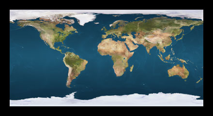
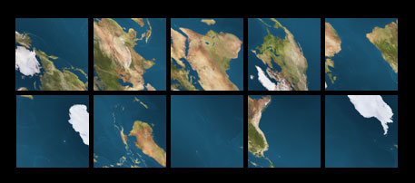

Le librerie di sviluppo e i programmi di VTP supportano il texture-mapping della intera terra anche attraverso la Proiezione Dymaxion, che é un metodo proiettivo della terra su un icosaedro sviluppato da Buckminster Fuller nel 1934. Per maggiori spiegazioni su questa proiezione, vedere Icosahedral mapping sul sito vterrain.org, alla pagina Spherical Textures.
Vengono usate 10 textures quadrate per ricoprire la terra. Tuttavia, molte immagini della terra sono distribuite come una singola, grande immagine rettangolare creata attraverso una proiezione piana geografica:

E' necessario un metodoche proietti questa immagine nelle 10 texture quadrate usate per la Proiezione Dymaxion, che appare qualcosa come quelle che seguono:

VTBuilder fornisce il comando da menu "Progetto: Crea Texture Dymaxion" che farà questa operazione per voi. Verranno richiesti:
- Il nome del file originale, che potrà essere in formato BMP oppure PNG
- La dimensione dei ogni file di uscita, in pixel.
- Potrete scegliere su valori in potenza di 2, da 128 a 4096. Un valore maggiore darà una imagine più dettagliata della terra, ma anche un maggior uso di memoria. Quella che segue é una tabella che mostra la memoria che verrà richiesta per ogni risoluzione:
Tile Size Texture Memory 256 1.8 MB 512 7.5 MB 1024 30 MB - Tenete presente la memoria texture della scheda grafica 3d che state usando - 30 MB di quadranti (detti "tiles") lavoreranno su schede con 64 MB di memoria, ma schede con meno dovranno usare una dimensione di quadranti di 512.
- Ricordate inoltre che non c'é necessità di eccedere con la risoluzione del file di input. A scopo indicativo, la dimensione deve essere 1/5 della larghezza dell'immagine originaria.
Il prefisso per i nomi dei file di uscita. Si può trattare di qualunque stringa di caratteri, come "La_mia_terra_512_". Si raccomanda di inserire nel nome il valore della grandezza (come ad esempio 512). Al termine dell'elaborazione vengono creati i file nella stessa directory dell'immagine sorgente.
Per usare la immagini da voi create in Enviro, copiatele nella cartella "Data/WholeEarth", e poi sceglietele attraveso il pannello di partenza di Enviro.